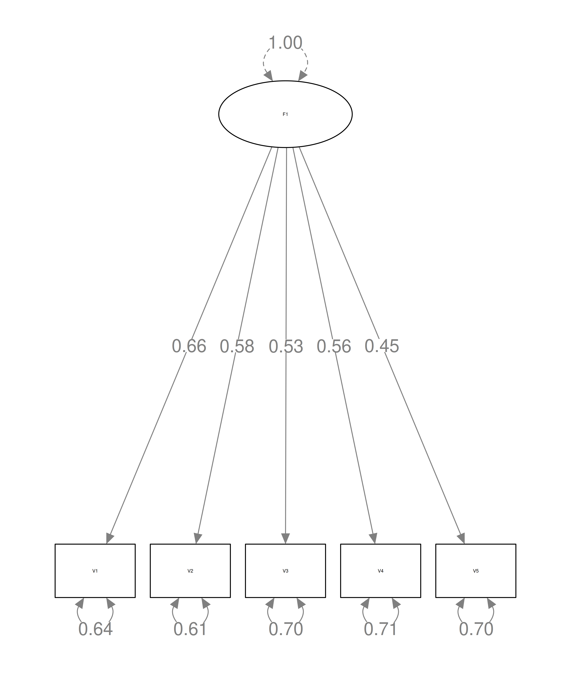
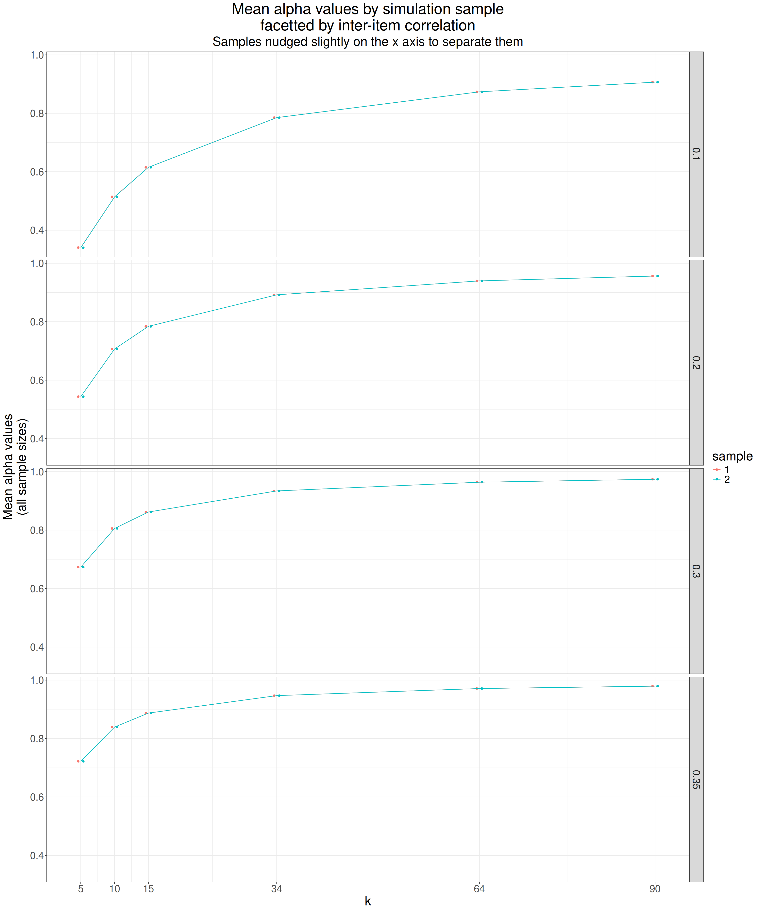
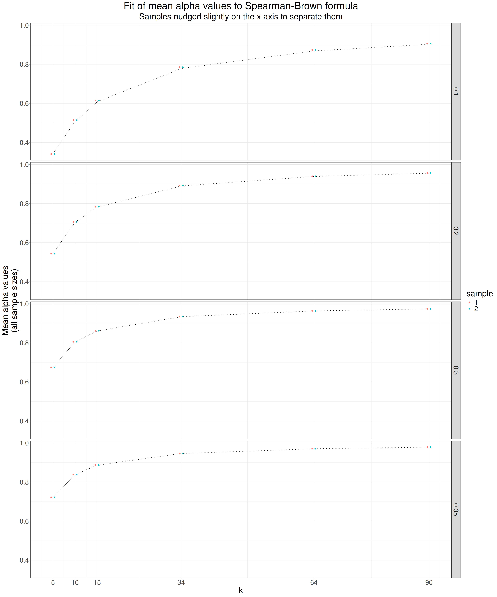
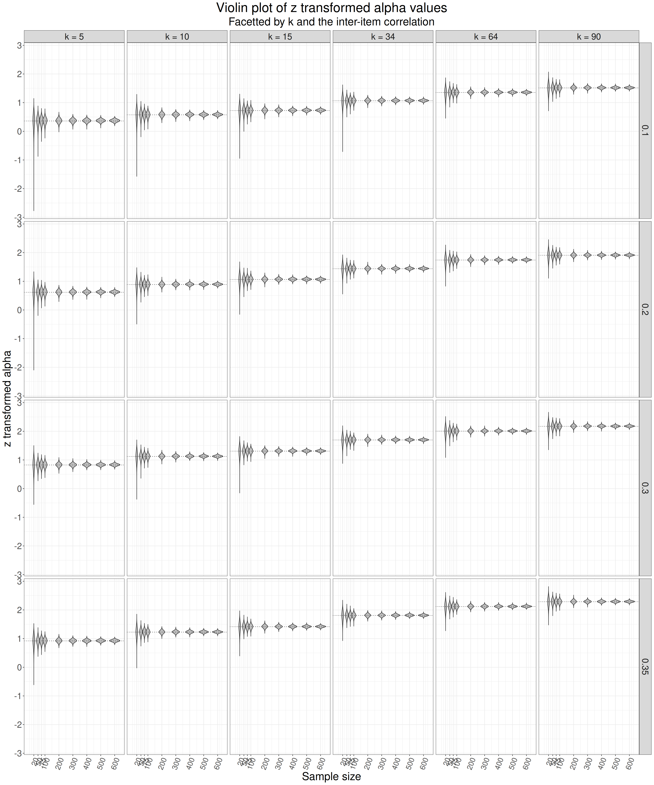
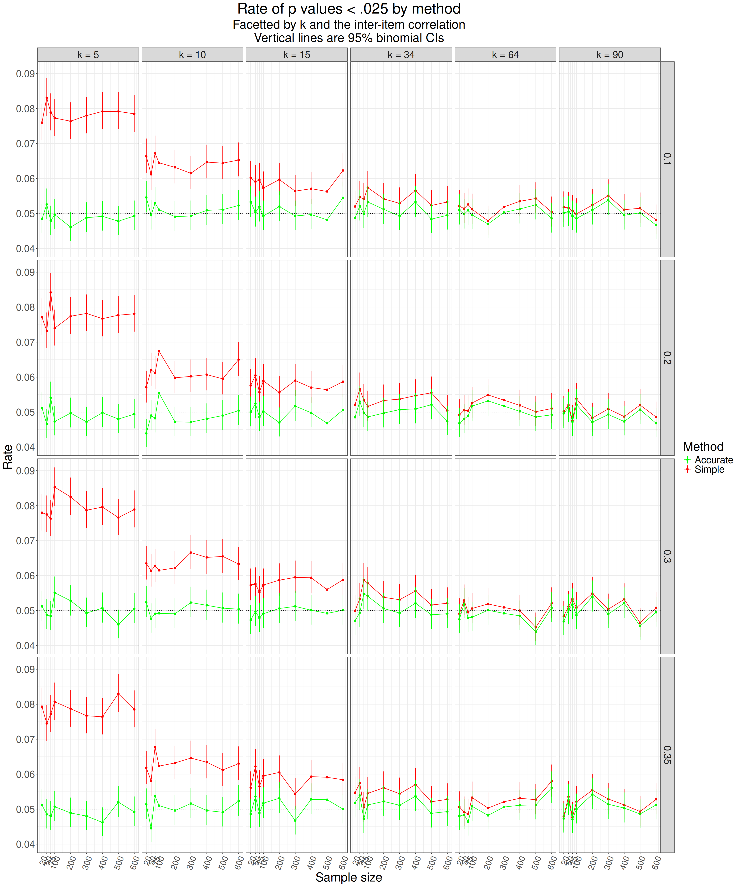

Learning points or “why is this here?!”
I think this is multipurpose:
- It illustrates how I do simulations. There are many ways of doing simulations in R but I am finding this largely tidyverse based way of doing things works well for me:
- it forces me to engage with what I’m doing rather than letting a simulation package (there are good ones) do that for me but perhaps hide the workings,
- it’s nice and easy to build piece by piece and check through with small numbers of replications until you are confident it’s working as wanted,
- it is pretty adaptable to many situations that merit simulation.
- It illustrates use of the function
mvnorm()from the MASS package which is invaluable for many simulations. - It gives background to a function in CECPfuns which I can reference from the function man page for those who want this background.
- It confirms that my function works fine and is correct to be using the more complicated of Feldt’s methods.
- I like that it cross-links the focal area, here Cronbach’s alpha index of internal reliability/consistency, also known as KR-20 (Kuder-Richardson method 20) to:
- confirmatory factor analysis (CFA) and showing simple use of the lavaan package,
- the Spearman-Brown formula for the relationship between measure length and internal reliability.
- It also throws some historical light on how incredibly increased computer power has changed what any of us can do compared to what Feldt had to do in the 1960s.
Introduction
This all started when I was adding a function getPdiff2alphas() to my CECPfuns package. I needed to do this as usually papers about methods give an example with the expected answer. However, the very nice paper (Feldt, 1969) behind this didn’t do that. To further complicate things, the paper offered two methods to get the p value from a parametric test of the hypothesis that two Cronbach alpha (Cronbach, 1950) values from two independent samples came from populations with the same alpha value. Feldt tested both methods and argued that for typical sample sizes and measure lengths the simpler method was adequate but he didn’t give a single pair of alpha values (and n values) and the p value to expect for that difference so I didn’t have a simple way to check my code and I had a suspicion that because measures have become much shorter since the 1960s the simpler method might not actually give proper coverage, i.e. might give more than 5% false positives for the null case rather than the 5% that it should testing against the conventional .05 crition. That Feldt didn’t give two Cronbach alpha values and their corresponding sample sizes and the p his methods would give for those values omission wasn’t a failure in the paper: he was doing a more general exploration and explanation of the methods. However, it was a worry for me as I like to have that very simple confirmation that I have converted the algorithm into my R correctly.
In the paper Feldt showed that you can get the p value from a very simple equation for a value he calls “w” which he shows has an F distribution. He gave two ways to get the p value which differed in the degrees of freedom for the F value from which you get the p value . He argues that the simpler method gives a pretty good approximation to the correct p value but he also gives a nice derivation of the better approximation based on statistical theory about F distributions and some rearrangement of simultaneous equations.
I wanted to check two things:
- that my implementation of the method was giving the correct p values and also
- to explore how substantial the difference between the methods was and whether I should implement the more complex algorithm.
Given that the more complex method is only pretty trivially more complex if you are computing it using R (https://www.r-project.org/) I thought I might want to use that over the simpler method in creating a function for me CECPfuns package (https://cecpfuns.psyctc.org/) and to add an online app to do the calculation for people to my shiny apps (https://shiny.psyctc.org/).
However, to check whether things worked properly I realised that I needed to do was to create simulations each having two samples from a multivariate Gaussian population distribution of the same correlation structure, and hence the same population Cronbach values. If the methods of Feldt work they will show that about 5% of such samples had a p value for the difference in their observed alpha values smaller than .05. I wanted to do it for different alpha values, sample sizes and numbers of items in the simulated measure.
This code block givs a little function that implements both of Feldt’s methods. My getPdiff2alphas() in CECPfuns differs from this in only using the more complicated of Feldt’s methods, as we will see, that’s the better method, and it adds my usual sanity checking of inputs to the function to protect users from confusing R error messages and warnings, however the central lines of code that get the p value are the same as in this function.
Show code
feldt2 <- function(obs.a1, obs.a2, k, n1, n2) {
# program translated from SAS program I wrote, Feldt2.sas
# tests significance of difference between two alpha values
# obs.a1 and obs.a2
# assumes same number of items in the measures:
k1 <- k
k2 <- k
# n1 and n2 supply sample sizes
# default test against p<-.05, 95% C.I.
if (obs.a1 > obs.a2) {
# necessary to reverse everything
tmp <- obs.a1
obs.a1 <- obs.a2
obs.a2 <- tmp
tmp <- n1
n1 <- n2
n2 <- tmp
tmp <- 1 # used as flag lower
} else {
tmp <- 0
}
w <- (1 - obs.a2)/(1 - obs.a1)
### the simple method
df1simp <- n1 - 1
df2simp <- n2 - 1
p.simp <- pf(w, df2simp, df1simp)
## the complex method, using the Feldt(1969) numbering
df1 <- n1 - 1
df4 <- n2 - 1
df3 <- (n2 - 1) * (k - 1)
df2 <- (n1 - 1) * (k - 1)
A <- df4 * df2 / ((df4 - 2)*(df2 - 2))
B <- (df1 + 2)*(df3 + 2) * df4^2 * df2^2 / ((df4 -2) * (df4 - 4) * df1 * (df2 - 2) * (df2 - 4) * df3)
v2 <- 2*A / (A - 1)
v1 <- 2*A^2 / (2*B - A*B - A^2)
p.accurate <- pf(w, v2, v1)
return(list(w = w,
df1simp = df1simp,
df2simp = df2simp,
p.simp = p.simp,
v2 = v2,
v1 = v1,
p.accurate = p.accurate))
}This next block creates a single sample of size n and k items from a multivariate Gaussian population with an inter-item correlation matrix where all the off-diagonal correlations are the same (iiCorr).
Show code
makeSample <- function(n, k, iiCorr){
### create the population item correlation matrix
matCorr <- matrix(rep(iiCorr, k^2), ncol = k)
### fix the diagonal to 1.0
diag(matCorr) <- 1
### create arbitrary vector of item means
### this can be a simple vector zeros here the mean structure
### won't affect the Cronbach alpha value
vecMeans <- rep(0, k)
### create the sample
MASS::mvrnorm(n = n,
mu = vecMeans,
Sigma = matCorr) %>%
### make it into a data frame as ...
as.data.frame() %>%
### going through that step to a tibble ...
### stops as_tibble() grumbling about variable names
as_tibble()
}
### left over check on the function
# makeSample(50, 5, .3)And now this next code block uses those two functions to create two samples and to get the p values for the differences between those samples
Show code
### set both population correlation matrices to be identical
### hence creating the null situation
valIiCorr1 <- .3
valIiCorr2 <- .3
doSingleSim <- function(n, k, vecMeans, iiCorr1, iiCorr2) {
makeSample(n, k, iiCorr1) -> tibSamp1
makeSample(n, k, iiCorr2) -> tibSamp2
### get alpha values
psy::cronbach(tibSamp1)$alpha -> alpha1
psy::cronbach(tibSamp2)$alpha -> alpha2
### test difference
feldt2(alpha1, alpha2, k, n, n) -> listPdiff
return(list(alpha1 = alpha1,
alpha2 = alpha2,
w = listPdiff$w,
df1simp = listPdiff$df1simp,
df2simp = listPdiff$df2simp,
pSimple = listPdiff$p.simp,
v2 = listPdiff$v2,
v1 = listPdiff$v1,
pAccurate = listPdiff$p.accurate))
}
### testing that
# doSingleSim(valN, valK, vecMeans, valIiCorr1, valIiCorr2)And now we use that to create the simulation
Show code
### always set the seed before doing a simulation so you can get replicable results
set.seed(12345)
### set the number of replications of the simulation per set of simulation design variables
nReps <- 10000
### create a vector of lengths of the simulated measures
vecK <- c(5, 10, 15, 34, 64, 90)
### similarly a vector of the sample sizes to simulate
vecN <- c(20, 50, 75, 100, 200, 300, 400, 500, 600)
vecCorrs <- c(.1, .2, .3, .35)
tibble(repN = 1:nReps, ### create one row for each replication
valN = list(vecN), # keep the sample sizes as a list for each row
valK = list(vecK), # ditto for the values of k and, next, the correlation matrices
valIiCorr1 = list(vecCorrs)) %>%
### now unnest those sample sizes
unnest_longer(valN) %>%
### and the k values
unnest_longer(valK) %>%
### and the correlation off-diagonal values
unnest_longer(valIiCorr1) %>%
### now switch to row-wise processing and for each row, i.e. each simulation replication
rowwise() %>%
### do the simulation
mutate(res = list(doSingleSim(valN, valK, vecMeans, valIiCorr1, valIiCorr1))) %>%
### I don't think I need this as I think the unnest that follows will do it but I like to be explicit
ungroup() %>%
### back to handling columns as vectors and can unnest the results that came back from
### doSingleSim() for each replication of each simulation
unnest_wider(res) -> tibResIf you are someone who has opened the code there you will see that what I have done is to use the mvrnorm() function from the MASS package [Venables & Ripley, 2002) which makes it trivially easy to simulate samples from multivariate populations with specified sample sizes, correlation matrices and mean structures. I used the following values.
Sample sizes of 20, 50, 75, 100, 200, 300, 400, 500, 600
Numbers of items 5, 10, 15, 34, 64, 90
Inter-item correlations (the same for all pairs of items) 0.1, 0.2, 0.3, 0.35
and 10,000 replications of the simulation for each of those 216 combinations of values.
Unpacking what is going on in that simulation process
Here is the population correlation matrix with k = 5 and the inter-item correlation set to .3.
Show code
Item | V1 | V2 | V3 | V4 | V5 |
|---|---|---|---|---|---|
V1 | 1.0 | 0.3 | 0.3 | 0.3 | 0.3 |
V2 | 0.3 | 1.0 | 0.3 | 0.3 | 0.3 |
V3 | 0.3 | 0.3 | 1.0 | 0.3 | 0.3 |
V4 | 0.3 | 0.3 | 0.3 | 1.0 | 0.3 |
V5 | 0.3 | 0.3 | 0.3 | 0.3 | 1.0 |
Simulating from that gives you samples from an infinitely large population in which that is the inter-item correlation matrix. Here is a typical sample with n = 10 from that population structure (values rounded to three decimal places).
Show code
set.seed(12345)
makeSample(10, 5, .3) -> tmpTib
tmpTib %>%
flextable() %>%
colformat_double(digits = 3)V1 | V2 | V3 | V4 | V5 |
|---|---|---|---|---|
0.219 | 0.277 | -0.377 | -0.758 | -1.304 |
1.173 | -2.606 | 1.148 | -1.592 | -0.476 |
1.606 | -1.079 | -0.329 | -0.288 | 0.452 |
1.522 | 0.674 | -1.009 | -0.538 | 0.854 |
-0.212 | 0.170 | -1.861 | -0.094 | -0.012 |
1.573 | 2.172 | 2.113 | 0.148 | 0.023 |
-0.660 | -1.381 | -0.587 | 0.604 | -0.065 |
-1.061 | 0.905 | 0.629 | 0.564 | -0.122 |
1.511 | 0.280 | 0.441 | -1.067 | -0.223 |
0.629 | -0.342 | 0.916 | 0.722 | 1.124 |
And here is the sample correlation matrix from that small dataset.
Show code
cor(tmpTib) %>%
as.data.frame() %>%
as_tibble() %>%
mutate(Item = paste0("V", 1:5)) %>%
select(Item, everything()) %>%
flextable() %>%
colformat_double(digits = 3)Item | V1 | V2 | V3 | V4 | V5 |
|---|---|---|---|---|---|
V1 | 1.000 | 0.035 | 0.304 | -0.541 | 0.260 |
V2 | 0.035 | 1.000 | 0.153 | 0.336 | 0.069 |
V3 | 0.304 | 0.153 | 1.000 | 0.003 | -0.018 |
V4 | -0.541 | 0.336 | 0.003 | 1.000 | 0.457 |
V5 | 0.260 | 0.069 | -0.018 | 0.457 | 1.000 |
That shows clearly how much the sample correlation matrix may differ from the population one with such a small n. The Cronbach alpha for the population correlation matrix is 0.682, that of the sample is 0.356. We can see that sample variation in Cronbach alpha values can be considerable.
Now for the first of my three little digressions, I do think they’re all of some real educational value but skip them and just skip to the summary if you only need that bottom line.
Digression 1: structural equation model (SEM) of single factor fit
Feel free to skip this if you aren’t interested in the link between Cronbach’s alpha and factor analysis. However, I like to see SEM plots of the model as I like to see things in graphics as well as text and tables. The plot can also be labelled with the parameters of the fit of the data to a model. The pertinent model for Cronbach’s alpha is a single factor model. Using the lavaan package (Rosseel, 2012) and sample with n = 600 I get this.
Show code
set.seed(12345)
makeSample(600, 5, .3) -> tmpTib
fac1model <- 'F1 =~ V1 + V2 + V3 + V4 + V5'
fitCFA1 <- lavaan::cfa(fac1model, data = tmpTib, std.lv = TRUE)
semPlot::semPaths(fitCFA1, what = "paths", whatLabels = "est", intercepts = FALSE,
sizeMan = 12, sizeMan2 = 8,layout = "tree2", sizeLat = 20, sizeLat2 = 10,
width = 5, height = 3, label.cex = 1, nCharNodes = 0, curve = 2.5,
label.scale = FALSE, edge.label.cex = 1.2)
That looks fine. The five measured variables all load firmly on a single latent variable (F1), there is quite a lot of individual error variance per variable as you might expect with inter-item correlations of .3 and k = 5. Here are the fit indices which look good.
Show code
lavaan::summary(fitCFA1, fit.measures = TRUE)lavaan 0.6-18 ended normally after 14 iterations
Estimator ML
Optimization method NLMINB
Number of model parameters 10
Number of observations 600
Model Test User Model:
Test statistic 2.311
Degrees of freedom 5
P-value (Chi-square) 0.805
Model Test Baseline Model:
Test statistic 428.105
Degrees of freedom 10
P-value 0.000
User Model versus Baseline Model:
Comparative Fit Index (CFI) 1.000
Tucker-Lewis Index (TLI) 1.013
Loglikelihood and Information Criteria:
Loglikelihood user model (H0) -4019.594
Loglikelihood unrestricted model (H1) -4018.438
Akaike (AIC) 8059.187
Bayesian (BIC) 8103.156
Sample-size adjusted Bayesian (SABIC) 8071.409
Root Mean Square Error of Approximation:
RMSEA 0.000
90 Percent confidence interval - lower 0.000
90 Percent confidence interval - upper 0.036
P-value H_0: RMSEA <= 0.050 0.987
P-value H_0: RMSEA >= 0.080 0.000
Standardized Root Mean Square Residual:
SRMR 0.011
Parameter Estimates:
Standard errors Standard
Information Expected
Information saturated (h1) model Structured
Latent Variables:
Estimate Std.Err z-value P(>|z|)
F1 =~
V1 0.656 0.047 13.962 0.000
V2 0.582 0.044 13.121 0.000
V3 0.535 0.046 11.740 0.000
V4 0.563 0.047 12.101 0.000
V5 0.451 0.044 10.231 0.000
Variances:
Estimate Std.Err z-value P(>|z|)
.V1 0.636 0.052 12.214 0.000
.V2 0.606 0.046 13.113 0.000
.V3 0.697 0.049 14.254 0.000
.V4 0.714 0.051 13.990 0.000
.V5 0.699 0.046 15.161 0.000
F1 1.000 OK. Let’s go back to look at the alpha values from the simulation before we come to the Feldt test itself.
Alpha values from the simulations
Here are the mean alpha values from the simulations for both the samples in each simulation extrapolating from the observed sample 1 mean alpha values for k = 5.
Show code
tibRes %>%
### let's get descriptive statistics for both alpha values for each value of k and of the correlation matrix
### using the group_by
group_by(valK, valIiCorr1) %>%
### that choice means we are analysing across all the sample sizes
summarise(mean1 = mean(alpha1), min1 = min(alpha1), max1 = max(alpha1), sd1 = sd(alpha1),
mean2 = mean(alpha2), min2 = min(alpha2), max2 = max(alpha2), sd2 = sd(alpha2)) -> tibSummary
### now some cosmetics to present that as a nice flextable summarising the means
tibSummary %>%
### get variable names that are more human readable, less in camelCase convention I and many
### other people using R seem to like
rename(k = valK,
iiCorr = valIiCorr1) %>%
### I only want to look at the means per grouping
select(k, iiCorr, starts_with("mean")) %>%
### this next will ensure that flextable shows the table as nicely nested by k
as_grouped_data(groups = "k") %>%
### get to flextable
flextable() %>%
### set the number of decimal points for the non-integer numeric columns
colformat_double(digits = 3) %>%
### this was new to me but makes for nicer column header labelling
### it's really a hang over from when I was putting other sample statistics in!
add_header_row(values = c("", "Sample 1", "Sample 2"),
colwidths = c(2, 1, 1)) %>%
align(align = "center", part = "all")Sample 1 | Sample 2 | ||
|---|---|---|---|
k | iiCorr | mean1 | mean2 |
5.000 | |||
0.100 | 0.341 | 0.340 | |
0.200 | 0.544 | 0.543 | |
0.300 | 0.673 | 0.674 | |
0.350 | 0.722 | 0.722 | |
10.000 | |||
0.100 | 0.514 | 0.514 | |
0.200 | 0.706 | 0.707 | |
0.300 | 0.806 | 0.806 | |
0.350 | 0.839 | 0.839 | |
15.000 | |||
0.100 | 0.615 | 0.615 | |
0.200 | 0.784 | 0.784 | |
0.300 | 0.862 | 0.862 | |
0.350 | 0.887 | 0.887 | |
34.000 | |||
0.100 | 0.785 | 0.785 | |
0.200 | 0.892 | 0.892 | |
0.300 | 0.934 | 0.934 | |
0.350 | 0.947 | 0.947 | |
64.000 | |||
0.100 | 0.873 | 0.873 | |
0.200 | 0.940 | 0.940 | |
0.300 | 0.964 | 0.964 | |
0.350 | 0.971 | 0.971 | |
90.000 | |||
0.100 | 0.907 | 0.907 | |
0.200 | 0.956 | 0.956 | |
0.300 | 0.974 | 0.974 | |
0.350 | 0.979 | 0.979 | |
Show code
### get long format for the summary data which makes plotting easier
tibSummary %>%
pivot_longer(cols = c(mean1, mean2)) %>%
mutate(sample = str_remove(name, fixed("mean"))) -> tmpTibNow let’s see that as a plot.
Show code
ggplot(data = tmpTib,
### using the group specification allows me to "dodge" the
### means from the two samples per simulation replication
aes(x = valK, y = value, colour = sample, group = sample)) +
### facet by correlation matrix
facet_grid(rows = vars(valIiCorr1)) +
### this shows the use of the group argument above to "dodge"
### the means from the two sampoles slightly so they don't
### overprint each other
geom_point(position = position_dodge(width = 1.5)) +
### get lines joining the means (will be by group)
geom_line() +
ylab("Mean alpha values\n(all sample sizes)") +
### set x axis to just label the k values actually simulated not a full range
scale_x_continuous("k",
breaks = vecK) +
ggtitle("Mean alpha values by simulation sample\nfacetted by inter-item correlation",
subtitle = "Samples nudged slightly on the x axis to separate them")
That all looks fine to me with the mean alpha values essentially the same for the two samples in each simulation, higher for the higher inter-item correlations and higher for higher k values.
Digression 2: do these alpha values fit the Spearman-Brown predicted values?
This is another digression but perhaps a useful learning point.
As this is all simple multivariate Gaussian data it should obey the Spearman-Brown formula that predicts the relationship between reliability and the number of items, see my Rblog piece about this relationship.
Show code
### I've stopped putting so many comments in from here on as most would be repeats
### I'm just labelling new things from here on
### create a little summary tibble that gets the S-B predictions for each correlation matrix
### and each value of k
tmpTib %>%
filter(sample == 1) %>%
select(valK, valIiCorr1, value) %>%
group_by(valIiCorr1) %>%
### this uses the Spearman-Brown formula
mutate(alpha5 = first(value), # get the first mean alpha value for k = 5, for each group of correlation matrices
### now we can use that to create the multiplier of the S-B formula for the other values of k
nMult = valK / 5,
### now implement the S-B formula
SBalpha = nMult * alpha5 / (1 + alpha5 * (nMult - 1))) -> tmpTibSpearmanBrown
### plot that!!
ggplot(data = tmpTib,
aes(x = valK, y = value, colour = sample, group = sample)) +
facet_grid(rows = vars(valIiCorr1)) +
geom_point(position = position_dodge(width = 1.5)) +
### this adds the prediction from the S-B formula to the plot
geom_line(data = tmpTibSpearmanBrown,
inherit.aes = FALSE,
aes(x = valK, y = SBalpha),
linetype = 3) +
ylab("Mean alpha values\n(all sample sizes)") +
scale_x_continuous("k",
breaks = vecK) +
ggtitle("Fit of mean alpha values to Spearman-Brown formula",
subtitle = "Samples nudged slightly on the x axis to separate them")
OK, that’s a perfect fit by the look of it.
How does sample size affect things?
Show code
### I'm just going to just use the sample1 values to keep things simple
tibRes %>%
mutate(zAlpha = atanh(alpha1), # that converts the alpha values to z transformed values
# that makes plotting their distribution more readable and less skew
# (as for z transforming correlations)
### this next just transforms valK to string of the form
### "k = #" and it then uses the levels to make sure they sort
### by k not alphabetically
### this was to get nicer labels in the facet headers for k
### I suspect that I could have done it differently in the facetting
### bit of ggplot but I haven't yet played with that
valK = str_c("k = ", valK),
valK = ordered(valK,
levels = c("k = 5",
"k = 10",
"k = 15",
"k = 34",
"k = 64",
"k = 90"))) -> tmpTib
### create a little tibble of the mean z transformed mean alpha values
### to use to create geom_hline() reference lines in the ggplot
tmpTib %>%
group_by(valK, valIiCorr1) %>%
summarise(zAlphaMean = mean(zAlpha, na.rm = TRUE)) -> tmpTibSummary
### now plot both those tibbles, the alpha values into geom_violin()
### and the means into geom_hline()
ggplot(data = tmpTib,
aes(x = valN, y = zAlpha, group = valN)) +
facet_grid(rows = vars(valIiCorr1),
cols = vars(valK)) +
geom_violin(width = 75, fill = "grey") +
### now the means
geom_hline(data = tmpTibSummary,
aes(yintercept = zAlphaMean),
linetype = 3) +
ggtitle("Violin plot of z transformed alpha values",
subtitle = "Facetted by k and the inter-item correlation") +
ylab("z transformed alpha") +
scale_x_continuous("Sample size",
breaks = vecN) +
theme(axis.text.x = element_text(angle = 70, hjust = 1, size = 16))
Not a very pretty plot but we can see that the mean alpha values are steady across the sample sizes and that the variance of the values drop markedly as the sample size increases. All as you’d expect.
OK. All fine, on to the point of all this: how well does Feldt’s method work in these genuine null simulations?
Testing the two method(s)
Show code
tibRes %>%
mutate(valK = str_c("k = ", valK),
### as above, this is just to get k as an ordered factor so they come out
### ordered correctly and not alphabetically
valK = ordered(valK,
levels = c("k = 5",
"k = 10",
"k = 15",
"k = 34",
"k = 64",
"k = 90"))) %>%
group_by(valN, valK, valIiCorr1) %>%
summarise(nReps = n(),
k = first(valK),
n = first(valN),
iiCorr1 = first(valIiCorr1),
iiCorr2 = first(valIiCorr2),
### get the false positive rates
### NB: test against .025 not .05 as you are doing two-sided test
nSigSimple = sum(pSimple < .025),
nSigAccurate = sum(pAccurate < .025),
### this next gets the binomial 95% CIs around the observed rates
### of false positives
### Hmisc::binconf() returns a matrix, hence the "[1, ]" to get a
### vector
### the list() makes sure the tibble initially has the CI as a list
propSigSimple = list(Hmisc::binconf(nSigSimple, nReps)[1, ]),
### same for the more complicated method p values
propSigAccurate = list(Hmisc::binconf(nSigAccurate, nReps)[1, ])) %>%
### now unnest the CI list for the simple method
unnest_wider(propSigSimple) %>%
### and rename the values (both for readability and because if you didn't
### you'd have a name clash when you unnest the CI for the more complicated
### method)
rename(rateSimple = PointEst,
LCLsimple = Lower,
UCLsimple = Upper) %>%
### now same for the more complicated method
unnest_wider(propSigAccurate) %>%
rename(rateAccurate = PointEst,
LCLaccurate = Lower,
UCLaccurate = Upper) -> tibSummary
### now pivot that to long format: easier to use for plotting
tibSummary %>%
pivot_longer(cols = c(rateSimple, LCLsimple, UCLsimple, rateAccurate, LCLaccurate, UCLaccurate),
names_to = "Method",
values_to = "Rate") %>%
### this is just getting more human readable labels on the observed rate, LCL and UCL
mutate(Statistic = case_when(
str_detect(Method, fixed("LCL")) ~ "LCL",
str_detect(Method, fixed("UCL")) ~ "UCL",
.default = "Rate"),
### similarly, this is just renaming the methods
Method = if_else(str_detect(Method, fixed("imple")), "Simple", "Accurate")) %>%
pivot_wider(names_from = Statistic, values_from = Rate) -> tibLongSummaryShow code
### create a vector of colours to label the methods
vecMethodColours <- c("Accurate" = "green",
"Simple" = "red")
ggplot(data = tibLongSummary,
aes(x = valN, y = Rate, colour = Method, group = Method)) +
facet_grid(rows = vars(iiCorr1),
cols = vars(valK)) +
geom_point() +
geom_line() +
### put in the reference line for the desired false positive rate of .05
geom_hline(yintercept = .05,
linetype = 3) +
### now add CIs
geom_linerange(aes(ymin = LCL, ymax = UCL)) +
ggtitle("Rate of p values < .025 by method",
subtitle = str_c("Facetted by k and the inter-item correlation",
"\nVertical lines are 95% binomial CIs")) +
scale_colour_manual(values = vecMethodColours) +
### I have done this to label the actual sample sizes not to get the default regular labels
scale_x_continuous("Sample size",
breaks = vecN) +
### and this twists those labels to avoid the small n ones overlapping each other
theme(axis.text.x = element_text(angle = 70, hjust = 1, size = 16))
Well that’s perfectly clear isn’t it? The designed false positive rate, .05, is marked by the dotted horizontal line and the simple method (in red) is giving a false positive rate way above the desired .05 for the small values of k, the number of item; by contrast the accurate method is, well, accurate! That’s exactly what the Feldt methods paper said would be the case as he new it biased and particularly for small k. That answers my question whether it’s really best to use the accurate method: yes it is!
Digression 3: historical note
Numbers of items per measure
It’s interesting to see in the Feldt paper that he clearly wasn’t expecting the much shorter measures that we have so many more of over fifty years later hence his feeling that the more accurate method wasn’t really necessary back then.
Computing power
“All empirical data were generated on the IBM 7044 computer at the University of Iowa Computer Center.*” (Feldt, 1969, p. 369)
I think the paper was relatively ahead of the game in using computer power in this way so I did some online searching. (Thanks to Roy Longbottom’s PC Benchmark Collection, to https://en.wikipedia.org/wiki/IBM_700/7000_series and some other pages.)
Apparently the 7044, which was a transistor based mainframe occupying most of a small room was first marketed in 1963 so it would have been a very young computer when the work was done for this paper. Solid state was only just replacing valve hardware at the time. It had 32kb of memory whereas, my laptop has 64Gb of RAM, i.e. two million times as much. The 7044 could access memory 500 times a second, my laptop’s AMD Ryzen™ 7 5800H processor which has 8 cores each with twice as much “L1 memory cache” on the CPU itself and able to be accessed I think up near the 3.2GHz of the processor’s calculation rate so 6,400,000 times the rate of shifting through data as that mainframe could manage. You could argue that if you could fully parallelise the way I’m doing things in R on the laptop it would hit 51,200,000 times the rate the 7044 could manage. (I haven’t parallelised things and suspect I’d gain little speed even I was a parallelising geek!) Apparently the 7044 was favoured by universities as it was cheaper than the other IBM machines of that era. I haven’t tried to explore it but I suspect that my mobile ’phone has some serious orders of magnitude more power than the 7044 had. This is one way computing power has completely transformed things.
I was also intrigued to see this footnote:
“* The author is indebted to Anthony J. Nitka for the development of the computer program used in this portion of the study.” (Feldt, 1969, p. 369)
I suspect that the programming would have been done in early FORTRAN and there is a reference on the web to the 7044 having had a “FORTRAN assembler” which sounds a bit odd as we would now see FORTRAN being a compiled not an assembler language (R uses a lot of compiled FORTRAN code). I think it would have been programmed using punched cards with none of the screen based editors and debuggers we have now. I think the programming involved would have been a serious bit of work, particularly back then and in early FORTRAN and probably without the libraries that underpin so much mathematical and statistical programming now. Those libraries, which take a substantial amount of the hard work of mathematical programming off the programmer, didn’t come into even early forms until the 1970s. So the paper draws heavily on computer power and one what would have been substantial work by Nitka, but he only gets a footnote and we are told nothing about the software used. (Incidentally, the impression I get from having read quite a few Feldt papers is that he was not an ungenerous person.)
How things have changed!
Summary
The Feldt (1969) paper presented two ways to get a p value for the difference between two Cronbach alpha values for independent samples, a simple one that was easier to compute and one he showed would be more accurate. My simulation shows:
I appear to have done the programming correctly (!)
He was quite right and the difference between the two methods isn’t trivial when the number of items in measures is lower. (It does become pretty trivial for k > 60 but we rarely use such long measures now.)
Hence, as the more accurate method isn’t really very hard to compute in R, I will use that one.
As byproducts:
I showed the single factor model of the simulated data.
The alpha values from the simulations fitted the Spearman-Brown relationship of reliability with K pretty perfectly. (No surprise but nice to see.)
The exploration threw light on how computing power has changed from the 1960s, changing quantitative methods in our field.
Show code
### I normally save everything at the end of running simulations but that would just clutter up the Rblog file space
### However, I am leaving the line of code as a suggestion if you are using this approach to simulation
# save.image(file = "Feldt2simNull.rda")References
- Cronbach, Lee J. 1950. “Further Evidence on Response Sets and Test Design.” Educational and Psychological Measurement 10: 3–31.
- Feldt, Leonard S. 1969. “A Test of the Hypothesis That Cronbach’s Alpha or Kuder-Richardson Coefficent Twenty Is the Same for Two Tests.” Psychometrika 34: 363–73.
- Rosseel, Yves. 2012. “Lavaan : An R Package for Structural Equation Modeling.” Journal of Statistical Software 48 (2). https://doi.org/10.18637/jss.v048.i02.
- Venables, W. N., and B. D. Ripley. 2002. Modern Applied Statistics with s. 4th ed. New York: Springer. https://www.stats.ox.ac.uk/pub/MASS4/.
web visitor counter
Dates
- 13.xi.24 First created.
Last updated
13/11/2024 at 07:56